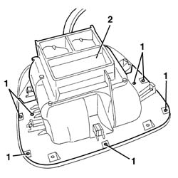
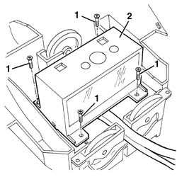

5560C64 electronic unit(infocentre) - replace after checking operation with special equipment
- Path
- Procedures > 55 ELECTRICAL EQUIPMENT > 5560 INSTRUMENT PANEL > 5560C other instruments > 5560C64 electronic unit(infocentre) - replace after checking operation with special equipment
- Kind
- repair procedure (removal / refitting; the operation number is the code)
- Applies to
- all engines; all production periods
- Interactive page
- https://sloeber94.github.io/elrnDB-a156/en/#/3238503
Applies to: all engines; production: da 03/02 a 09/03, da 10/03
 Removing
Removing
 Refitting
Refitting7040G24 switch for facia compartment light - r+r
7040G20 facia compartment light bulb holder - r+r
7040A65 passenger compartment box lock , one , r r
7040L37 gear lever plate - r r
5040D18 air conditioner control unit - r r
7040A25 central facia trim - r r
5560C51 combined analogue control panel - r+r or replace
5010C24 upper air outlet on facia - r r
1. Undo the bolts fixing the lower vent assembly.
2. Remove the lower vent assembly.

Applies to: all engines; production: da 03/02 a 09/03, da 10/03
1. Turn the assembly over and undo the Infocenter fixing bolts.
2. Remove the Infocenter.

Applies to: all engines; production: da 03/02 a 09/03, da 10/03
Refitting
RemovingCheck that the device is not damaged.
Place the device in the housing and secure it using the bolts.
Position the lower vent assembly and secure it using the bolts.
5010C24 upper air outlet on facia - r r
5560C51 combined analogue control panel - r+r or replace
7040A25 central facia trim - r r
5040D18 air conditioner control unit - r r
7040L37 gear lever plate - r r
7040A65 passenger compartment box lock , one , r r
7040G20 facia compartment light bulb holder - r+r
7040G24 switch for facia compartment light - r+r
Test the device is working properly.
Topics linked from this page (12)
- 5010C24 upper air outlet on facia - r r
- 5040D18 air conditioner control unit - r r
- 5560C51 combined analogue control panel - r+r or replace
- 5570T80 car radio unit - r+r
- 7040A25 central facia trim - r r
- 7040A31 flap assembly - r r
- 7040A65 passenger compartment box lock , one , r r
- 7040G20 facia compartment light bulb holder - r+r
- 7040G24 switch for facia compartment light - r+r
- 7040L20 tunnel trim - r r
- 7040L37 gear lever plate - r r
- 7065C42 ashtray (one) r+r